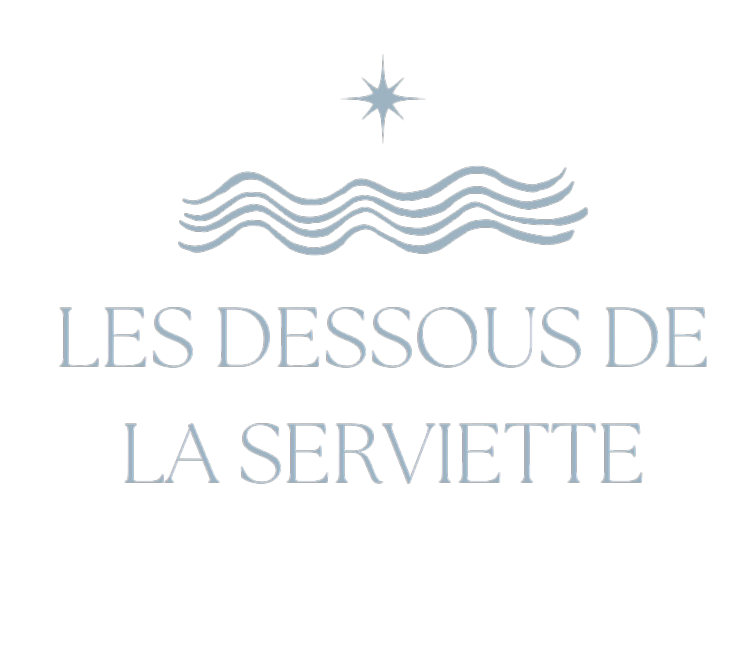
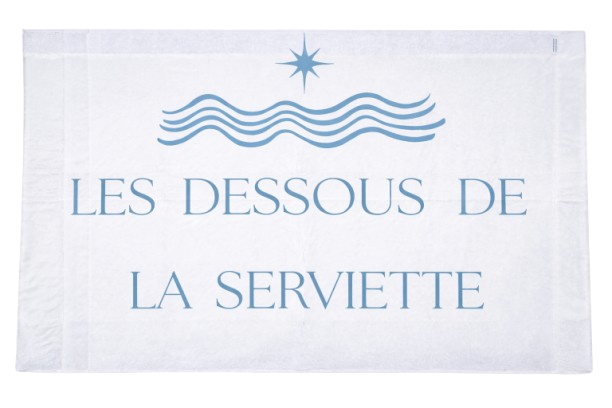

Serviette anti-sable pour enfant
Si vous voulez acheter la serviette cliquez sur l'adresse e-mail si dessous :lesdessousdeserviette@gmail.com
Marre du sable qui colle à votre serviette et de l’inconfort à la plage ? Les Dessous de la Serviette sont la solution idéale. Ce film plastiques pratique et ingénieux se place sous votre serviette pour créer une véritable barrière contre le sable, l’humidité et la chaleur, vous garantissant un espace propre, sec et agréable. Conçu spécialement pour améliorer le confort, il offre une surface douce et stable, évitant les sensations désagréables liées au sol irrégulier. Les enfants peuvent ainsi s’allonger, jouer ou se reposer en toute tranquillité, sans gêne ni saleté. En plus d’assurer une meilleure hygiène, il empêche le sable de coller à la peau ou à la serviette et limite la quantité de sable transportée dans les sacs ou les voitures. Facile à entretenir, un simple rinçage à l’eau suffit, et son séchage rapide permet une utilisation répétée pendant toute la durée des vacances. Léger, compact et pliable, il se transporte facilement et s’installe en quelques secondes. Polyvalent, il convient aussi bien à la plage qu’aux pique-niques, aux parcs ou à toute sortie en plein air. Durable, réutilisable et conçu pour résister au sable, au sel et à l’humidité, il représente un excellent rapport qualité-prix, avec un tarif accessible entre 10 et 23 euros. Les Dessous de la Serviette, c’est la garantie de moments de détente plus propres, plus confortables et sans contrainte.